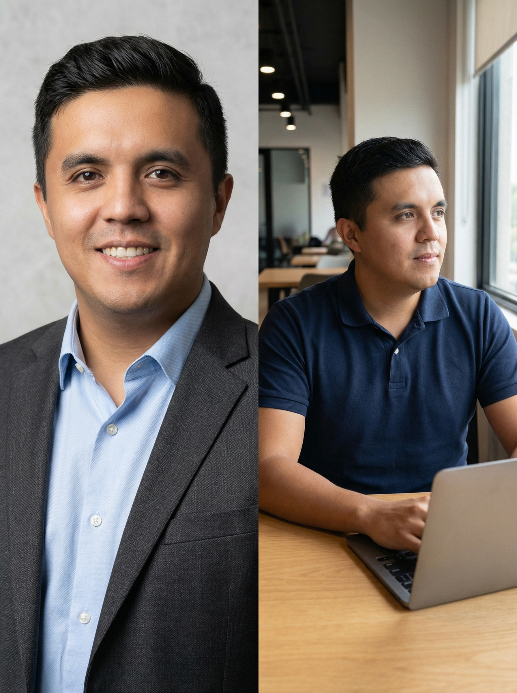

CPO / CEO / Лидер цифровой трансформации
13 лет опыта в Fintech и Insurtech. Создаю продукты №1 на рынке, внедряю AI и масштабирую кросс-функциональные команды.
Связаться со мнойОбо мне: Опытный руководитель (CPO/CIO/CEO) с фокусом на стратегическое развитие и технологические инновации. Специализируюсь на создании digital-продуктов с нуля и трансформации текущих бизнес-процессов в крупных финансовых структурах (СОГАЗ, Сбер, Промсвязьбанк). Эксперт в Agile, управлении данными и внедрении искусственного интеллекта. Умею строить сильные команды и доводить проекты до финансового результата.